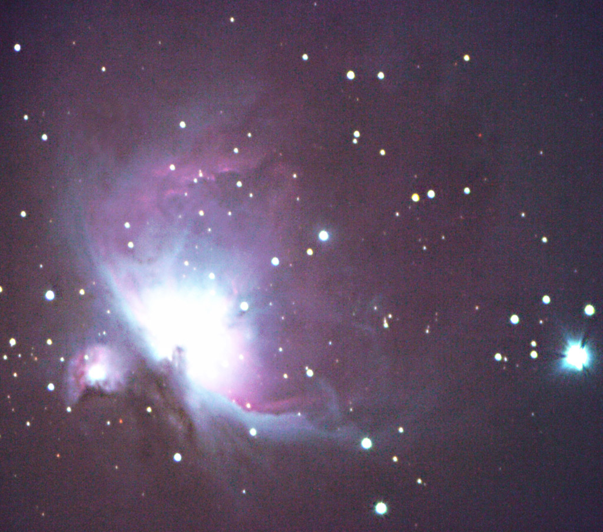

This is a high resolution image of the Orion Nebula. This is a single exposure of 1200 sec (20 min). A Canon Rebel XTi at ISO 100 with a Celestron 80mm refractor was used. It was mounted and tracked on a
Meade 12" LX200 using a Meade DSI ProII for autoguiding.
